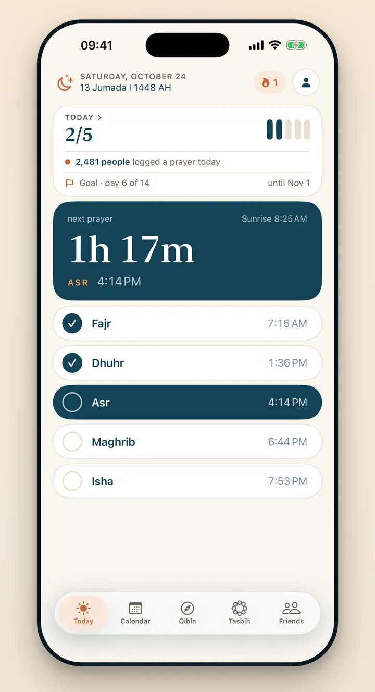

Praylendar prayer tracker
Track the five prayers.
Keep the record simple.
A focused iPhone prayer journal designed around the exact thing you want to remember each day: which prayers you completed.

A daily checklist, not a complicated dashboard
Praylendar places Fajr, Dhuhr, Asr, Maghrib and Isha on one screen, each with its time for your city. Tap each completed prayer and it is saved straight away. The interface stays the same whether you completed one prayer or all five.
What you log
The specific prayers completed that day, prayers you made up later, and cycle days when they apply.
What you see
A monthly and yearly calendar, your streak, your perfect days and your totals.
What stays private
Your full prayer calendar. It is only shared when you deliberately export a card.
What premium adds
Editing of any past day, insights and trends, extra widgets, four themes and extra reminder sounds. Core tracking, prayer times and exports remain free.
Designed for honest tracking
A useful prayer record should be fast enough to maintain. Praylendar does not ask for notes or a long reflection every night, and goals are optional. You can open the app, check the prayers and leave. That lower friction is the point.
Reminders and a gentle streak
If you want a prompt, get a reminder at prayer time or 5 to 30 minutes before, for the prayers you choose, and an optional evening check-in to complete the day. The streak marks the days you come back, and in Cycle mode it waits for you.
Praylendar shows prayer times calculated on your iPhone, but it is a personal tracking tool, not a religious authority. When in doubt, follow the times of your local mosque.
See the calendar
Learn how every prayer count becomes a color.
Start your year in prayers.
Free on the App Store, for iPhone. Every prayer you log colors a square.
Download on theApp Store